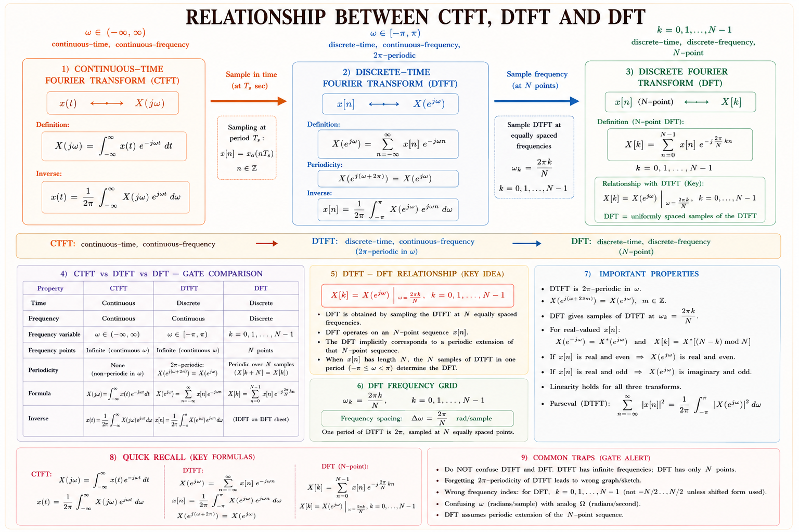
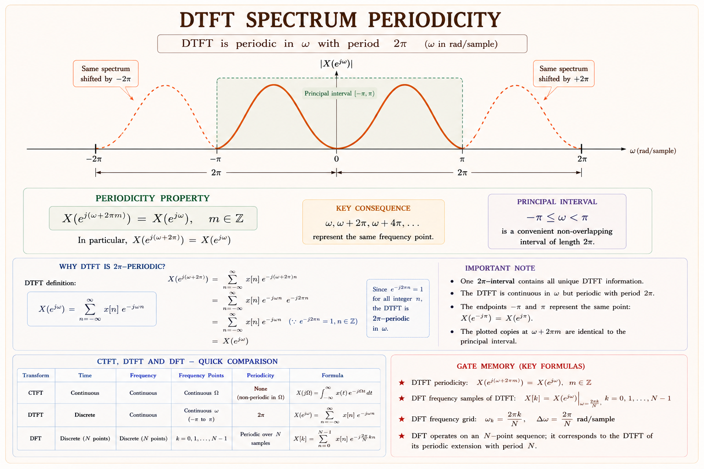
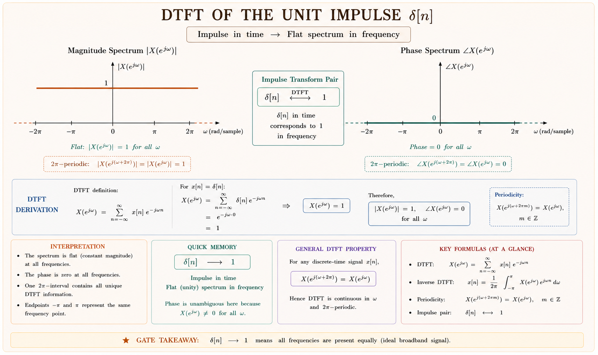
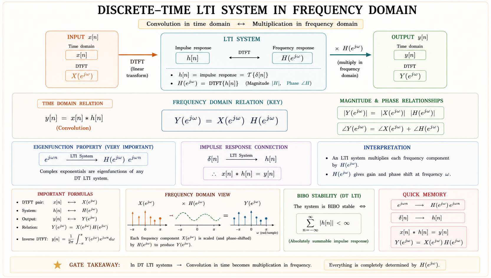

A complete conceptual and mathematical treatment of the DTFT — from the fundamental definition through all major properties, frequency response interpretation, magnitude and phase spectra, and GATE/IES previous year questions with detailed solutions.
Every practising engineer works with digital systems: microcontrollers, DSPs, audio codecs, wireless modems, image processors. All of these operate on discrete-time sequences — not continuous waveforms. Yet we need to understand their frequency content just as urgently as we need to understand the frequency content of an analogue signal. The Discrete-Time Fourier Transform (DTFT) is the tool that provides exactly this capability.[1]
Think of it this way. When a sensor samples an analogue voice signal at 8 kHz, the continuous signal \(x(t)\) becomes a sequence \(x[n] = x(nT_s)\) where \(T_s = 125\,\mu\text{s}\). The DTFT tells us how the energy of this sequence \(x[n]\) is distributed across different frequencies. This is the gateway to designing digital filters, analysing digital communication channels, and implementing spectral analysers on a chip.[1,2]
Given a discrete-time sequence \(x[n]\), find its frequency-domain representation so we can understand its spectral content, design filters that act on it, and analyse the response of discrete-time LTI systems.

Figure 1.1 — The evolution from continuous Fourier Transform to DTFT to DFT. The DTFT occupies the middle ground: discrete in time, but continuous and periodic in frequency.
The CTFT maps \(x(t)\) to \(X(j\Omega)\) where \(\Omega\) ranges over all real frequencies \((-\infty,\infty)\). The DTFT maps \(x[n]\) to \(X(e^{j\omega})\) where \(\omega\) is digital frequency, always periodic with period \(2\pi\). This periodicity is not an approximation — it is a fundamental mathematical consequence of the discrete-time nature of the signal.
The DTFT of a sequence \(x[n]\) is defined as:[1]
Here \(\omega\) is called the digital frequency or normalised frequency, measured in radians per sample (rad/sample). It is dimensionless in the sense that it has already absorbed the sampling period \(T_s\): the relationship between digital frequency \(\omega\) and analogue frequency \(\Omega\) is \(\omega = \Omega T_s\).
Think of \(e^{-j\omega n}\) as a complex sinusoid at frequency \(\omega\). The DTFT is asking: "How much of the frequency \(\omega\) is present in \(x[n]\)?" It does this by multiplying \(x[n]\) with a test sinusoid \(e^{-j\omega n}\) and summing over all \(n\). If the sequence has a strong component at \(\omega\), the sum is large; if not, contributions cancel and the sum is small.
The DTFT converges (exists) if the sequence \(x[n]\) is absolutely summable:[1]
If \(x[n]\) is not absolutely summable but is square summable (finite energy), the DTFT still exists in the mean-square sense. Sequences like the unit step \(u[n]\) are not absolutely summable; their DTFT involves impulses (Dirac delta functions in frequency).
Given \(X(e^{j\omega})\), we can recover \(x[n]\) via:[1]
The integration is over exactly one period \([-\pi, \pi]\) because \(X(e^{j\omega})\) is periodic with period \(2\pi\). This is an important difference from the inverse CTFT, which integrates over the entire real line.
In the inverse DTFT, integrate over any one full period. You may use \([0, 2\pi]\) or \([-\pi, \pi]\) — both give the same result because \(X(e^{j\omega})\) repeats every \(2\pi\). Many students forget the \(\frac{1}{2\pi}\) factor and lose marks.
| Quantity | Symbol | Meaning |
|---|---|---|
| Digital frequency | \(\omega\) | Radians per sample; \(\omega = \Omega T_s\) |
| Analogue frequency | \(\Omega\) | Radians per second (rad/s) |
| DTFT notation | \(X(e^{j\omega})\) | Emphasises periodicity via the \(e^{j\omega}\) form |
| DTFT pair | \(x[n] \xleftrightarrow{\mathcal{F}} X(e^{j\omega})\) | Transform pair notation |
| Fundamental period | \(2\pi\) | Frequency range of one period |
The most fundamental property of the DTFT — and one that sets it apart from the continuous Fourier transform — is that it is always periodic in \(\omega\) with period \(2\pi\).
The key step is that \(e^{-j2\pi n} = \cos(2\pi n) - j\sin(2\pi n) = 1\) for all integers \(n\). This is not an approximation — it is an exact identity that holds because \(n\) is always an integer in a discrete-time sequence.[2]
Consider two digital sinusoids: \(x_1[n] = e^{j\omega_0 n}\) and \(x_2[n] = e^{j(\omega_0 + 2\pi) n}\). Computing \(x_2[n]\):
The sequences are identical. This is the root of aliasing: a discrete-time system cannot distinguish between digital frequencies \(\omega\) and \(\omega + 2\pi k\) for any integer \(k\). All distinct information is contained in a single period, typically chosen as \([-\pi, \pi]\) or \([0, 2\pi]\).

Figure 3.1 — The DTFT spectrum repeats every \(2\pi\). The solid orange region is the principal period \([-\pi, \pi]\). Copies at \(-3\pi\) to \(-\pi\) and \(\pi\) to \(3\pi\) are identical (shown dashed). Only the principal period carries unique information.
The periodicity of the DTFT with period \(2\pi\) in \(\omega\) directly corresponds to the periodicity of the sampled spectrum with period \(f_s\) (sampling frequency) in \(\Omega\). The Nyquist criterion says: to avoid aliasing, sample at \(f_s \geq 2f_{max}\). In digital frequency terms, the highest meaningful frequency is \(\omega = \pi\), which maps to \(f_s/2\).
Since \(X(e^{j\omega})\) is in general a complex-valued function of the real variable \(\omega\), it can be decomposed into its real and imaginary parts, or equivalently into its magnitude and phase:[2]
where \(|X(e^{j\omega})|\) is the magnitude spectrum and \(\angle X(e^{j\omega})\) is the phase spectrum.
If \(x[n]\) is a real-valued sequence (the most common case in practice), then \(X(e^{j\omega})\) has Hermitian symmetry:[1]
This has two crucial consequences:
The DTFT of the unit impulse \(\delta[n]\) is simply:

Figure 4.1 — Magnitude and phase spectra of \(\delta[n]\). The magnitude is uniformly 1 across all frequencies (all-pass) and the phase is identically zero. A unit impulse contains all frequencies equally — the ideal broadband signal.
The quantity \(|X(e^{j\omega})|^2\) is called the energy spectral density (for finite-energy signals). By Parseval's theorem:[1]
This is the fundamental energy conservation statement: the total energy computed in the time domain equals the total energy computed by integrating the energy spectral density over frequency.
These pairs appear repeatedly in GATE problems. Memorise them and understand their derivations.[1,2]
| Sequence \(x[n]\) | DTFT \(X(e^{j\omega})\) | Condition / Note |
|---|---|---|
| \(\delta[n]\) | \(1\) | All-frequency, uniform spectrum |
| \(\delta[n - n_0]\) | \(e^{-j\omega n_0}\) | Shift in time → linear phase in freq. |
| \(u[n]\) | \(\dfrac{1}{1-e^{-j\omega}} + \pi\delta(\omega)\), \(|\omega|<\pi\)< /td> | Not abs. summable; impulse at DC |
| \(a^n u[n]\), \(|a|<1\)< /td> | \(\dfrac{1}{1 - a e^{-j\omega}}\) | Key GATE formula — geometric series |
| \((n+1)a^n u[n]\) | \(\dfrac{1}{(1 - a e^{-j\omega})^2}\) | Differentiation in freq. property |
| \(e^{j\omega_0 n}\) | \(2\pi\delta(\omega - \omega_0)\), periodic | Single complex exponential |
| \(\cos(\omega_0 n)\) | \(\pi[\delta(\omega-\omega_0)+\delta(\omega+\omega_0)]\) | Two spectral lines at \(\pm\omega_0\) |
| \(\sin(\omega_0 n)\) | \(\dfrac{\pi}{j}[\delta(\omega-\omega_0)-\delta(\omega+\omega_0)]\) | Pure imaginary, odd phase |
| Rect window \(w[n]\) | \(\dfrac{\sin[\omega(2N+1)/2]}{\sin(\omega/2)}\) | Dirichlet kernel; N-point window |
| \(\text{sinc}(\omega_c n/\pi)/\pi n\) ideal LPF | \(\text{rect}(\omega / 2\omega_c)\) | Brick-wall low-pass filter in freq. |
This is the most frequently tested DTFT computation. Let \(x[n] = a^n u[n]\) where \(|a| < 1\) (so the sequence decays to zero and is absolutely summable).
The last step uses the formula for an infinite geometric series: \(\sum_{n=0}^{\infty} r^n = \frac{1}{1-r}\) for \(|r| < 1\), with \(r=ae^{-j\omega}\). Since \(|r|=|a| \cdot |e^{-j\omega}|=|a| \cdot 1=|a| < 1\), the series converges for all \(\omega\).
The magnitude of \(X(e^{j\omega}) = \frac{1}{1-ae^{-j\omega}}\) at \(\omega=0\) is \(\frac{1}{1-a}\) (maximum, for \(a>0\)). At \(\omega=\pi\), magnitude is \(\frac{1}{1+a}\) (minimum). These two values alone can answer many GATE questions about the shape of the spectrum.
Properties allow us to find the DTFT of complex sequences from known simple pairs without direct computation. GATE heavily tests property-based problems.[1,2,3]
| Property | Time Domain | Frequency Domain |
|---|---|---|
| Linearity | \(ax[n] + by[n]\) | \(aX(e^{j\omega}) + bY(e^{j\omega})\) |
| Time Shift | \(x[n - n_0]\) | \(e^{-j\omega n_0}\, X(e^{j\omega})\) |
| Frequency Shift | \(e^{j\omega_0 n}\, x[n]\) | \(X(e^{j(\omega - \omega_0)})\) |
| Time Reversal | \(x[-n]\) | \(X(e^{-j\omega})\) |
| Conjugation | \(x^*[n]\) | \(X^*(e^{-j\omega})\) |
| Convolution (Time) | \(x[n]*y[n]\) | \(X(e^{j\omega})\cdot Y(e^{j\omega})\) |
| Multiplication (Time) | \(x[n]\cdot y[n]\) | \(\frac{1}{2\pi} X(e^{j\omega}) * Y(e^{j\omega})\) |
| Diff. in Frequency | \(nx[n]\) | \(j\frac{d}{d\omega}X(e^{j\omega})\) |
| Accumulation (Time) | \(\sum_{k=-\infty}^{n} x[k]\) | \(\frac{X(e^{j\omega})}{1-e^{-j\omega}} + \pi X(1)\delta(\omega)\) |
| Parseval's Theorem | \(\sum|x[n]|^2\) | \(\frac{1}{2\pi}\int_{-\pi}^{\pi}|X(e^{j\omega})|^2\,d\omega\) |
The time-shift property is arguably the most tested in GATE. If \(x[n] \xleftrightarrow{\mathcal{F}} X(e^{j\omega})\), then:
A time delay of \(n_0\) samples does not change the magnitude spectrum: \(|e^{-j\omega n_0} X(e^{j\omega})| = |X(e^{j\omega})|\). It only introduces a linear phase term \(-\omega n_0\). This is why a digital filter can introduce delay without distorting the signal's frequency content — as long as the phase response is linear.
This is the most important property for system analysis. If \(y[n] = x[n] * h[n]\) (convolution in time), then in the frequency domain:
This converts the difficult operation of convolution (infinite sum) into simple multiplication. The entire theory of digital filter design rests on this property: we specify the desired \(H(e^{j\omega})\), then find \(h[n]\) as its inverse DTFT.
If \(x[n] \xleftrightarrow{\mathcal{F}} X(e^{j\omega})\), then:
Application: Find DTFT of \(n a^n u[n]\). We know \(a^n u[n] \xleftrightarrow{\mathcal{F}} \frac{1}{1-ae^{-j\omega}}\). Differentiating:
The frequency response is the DTFT of the impulse response \(h[n]\) of a linear time-invariant (LTI) system.[2,3]
This is simply the DTFT of \(h[n]\). The output of an LTI system is:
Complex exponentials are eigenfunctions of LTI systems. If the input is \(x[n] = e^{j\omega_0 n}\), the output is:
The output is the same sinusoid, just scaled (in magnitude) and shifted (in phase) by \(H(e^{j\omega_0})\). This is why sinusoids are special: they pass through LTI systems with only amplitude and phase changes, not shape changes.

Figure 7.1 — An LTI system with impulse response \(h[n]\) and frequency response \(H(e^{j\omega})\). The output spectrum is simply the product of the input spectrum and the frequency response. Convolution in time becomes multiplication in frequency.
| Filter Type | \(|H(e^{j\omega})|\) | Phase | Application |
|---|---|---|---|
| Low-Pass (LPF) | 1 for \(|\omega|<\omega_c\), 0 else | Linear \(-n_d\omega\) | Smoothing, anti-alias |
| High-Pass (HPF) | 0 for \(|\omega|<\omega_c\), 1 else | Linear | Edge detection, differentiation |
| Band-Pass (BPF) | 1 for \(\omega_1<|\omega|<\omega_2\)< /td> | Linear | Channel selection, modulation |
| Band-Stop (BSF) | 0 for \(\omega_1<|\omega|<\omega_2\)< /td> | Linear | Notch filter, interference removal |
| All-Pass | \(|H|=1\) for all \(\omega\) | Non-trivial | Phase equalisation |
For a causal LTI system described by a linear constant-coefficient difference equation:
Take the DTFT of both sides, use the time-shift property (\(y[n-k] \to e^{-j\omega k}Y(e^{j\omega})\)), and solve for \(H = Y/X\).
Step 1 — Apply the geometric series formula:
Step 2 — Rationalise to find magnitude and phase:
Step 3 — Check special values:
This is a low-pass characteristic — maximum gain at \(\omega=0\) (DC), minimum at \(\omega=\pi\) (Nyquist). Makes physical sense: the sequence \((\frac{1}{2})^n u[n]\) decays slowly, emphasising low frequencies.
Step 1 — Split the sum into causal and anti-causal parts:
Step 2 — Part A (geometric series with \(r=\frac{1}{3}e^{-j\omega}\)):
Step 3 — Part B (let \(m = -n\), so \(m\) runs from 1 to \(\infty\)):
Step 4 — Add Parts A and B:
This is purely real, confirming the symmetry property: \(x[n] = \left(\tfrac{1}{3}\right)^{|n|}\) is real and even (\(x[-n]=x[n]\)), so its DTFT must be real and even.
Step 1 — Take DTFT of both sides:
Step 2 — Find \(|H|\) at \(\omega=0\) and \(\omega=\pi\):
Conclusion: Since \(|H(0)| = 2 > |H(\pi)| = 0.4\), this is a low-pass filter with gain 2 at DC and gain 0.4 at Nyquist frequency.
The DTFT of a sequence \(x[n] = \left(\frac{1}{2}\right)^n u[n]\) evaluated at \(\omega = \pi/3\) gives a complex number. The magnitude \(|X(e^{j\pi/3})|\) is:
Method: \(|X(e^{j\omega})| = \frac{1}{\sqrt{5/4 - \cos\omega}}\). At \(\omega = \pi/3\): \(\cos(\pi/3) = 1/2\). So \(|X| = \frac{1}{\sqrt{5/4 - 1/2}} = \frac{1}{\sqrt{3/4}} = \frac{2}{\sqrt{3}}\).
For a real-valued sequence \(x[n]\), which of the following statements about its DTFT \(X(e^{j\omega})\) is NOT true?
Explanation: For real \(x[n]\), the magnitude spectrum is even but the phase spectrum is odd: \(\angle X(e^{-j\omega}) = -\angle X(e^{j\omega})\). Statement (C) incorrectly claims the phase is even — that is the false statement.
If \(x[n] \xleftrightarrow{\mathcal{F}} X(e^{j\omega})\), then the DTFT of \(y[n] = x[n-3]\) is:
Key: Time-shift property: \(x[n-n_0] \xleftrightarrow{\mathcal{F}} e^{-j\omega n_0}\, X(e^{j\omega})\). A delay of 3 samples multiplies the spectrum by \(e^{-j3\omega}\) — a linear phase factor. This does not change \(|X|\).
A discrete LTI system has impulse response \(h[n] = \left(\frac{1}{4}\right)^n u[n]\). An input \(x[n] = \left(\frac{1}{2}\right)^n u[n]\) is applied. The output \(y[n]\) has DTFT:
Method: By the convolution property, \(Y(e^{j\omega}) = X(e^{j\omega})\cdot H(e^{j\omega}) = \frac{1}{1-\frac{1}{2}e^{-j\omega}} \cdot \frac{1}{1-\frac{1}{4}e^{-j\omega}}\). Partial fractions would then be used to find \(y[n]\) in the time domain.
The total energy of the sequence \(x[n] = \left(\frac{1}{2}\right)^n u[n]\) is:
Time-domain method: \(\sum_{n=0}^{\infty}|x[n]|^2 = \sum_{n=0}^{\infty}\left(\frac{1}{4}\right)^n = \frac{1}{1-1/4} = \frac{4}{3}\). This can be verified using Parseval's theorem by integrating \(|X(e^{j\omega})|^2\) over \([-\pi,\pi]\) and dividing by \(2\pi\).
The inverse DTFT is \(x[n] = \frac{1}{2\pi}\int_{-\pi}^{\pi}X(e^{j\omega})e^{j\omega n}d\omega\). Many students drop the \(\frac{1}{2\pi}\) factor. The CTFT has \(\frac{1}{2\pi}\) in the inverse; the DFT has \(\frac{1}{N}\). Always verify with the specific transform.
If \(|a| \geq 1\) in \(a^n u[n]\), the geometric series does not converge and the DTFT formula \(\frac{1}{1-ae^{-j\omega}}\) is invalid. Use Z-transform with ROC analysis instead.
Digital frequency \(\omega\) is dimensionless (rad/sample), normalised to \([-\pi,\pi]\). Analogue frequency \(\Omega\) is in rad/s. They are related by \(\omega = \Omega T_s\). The DTFT uses \(\omega\); CTFT uses \(\Omega\). Mixing them is a fatal error in GATE numerical problems.
For real \(x[n]\), the magnitude spectrum \(|X(e^{j\omega})|\) is even, but the phase spectrum \(\angle X(e^{j\omega})\) is odd. This is a favourite GATE trap (as seen in PYQ 2 above).
Multiplication in time \(x[n]\cdot y[n]\) corresponds to circular convolution (with \(\frac{1}{2\pi}\) factor) in the DTFT domain, NOT simple multiplication. Simple multiplication in frequency corresponds to convolution in time.
Convolution in time → Multiplication in frequency. Multiplication in time → Convolution in frequency (with \(\frac{1}{2\pi}\)). This is the exact opposite of what many students expect. Remember: operations pair up and flip sides.
Have a question on DTFT computation, properties, frequency response, or spectra? Type below or pick a suggestion.
\(X(e^{j\omega}) = \sum_{n=-\infty}^{\infty} x[n]\,e^{-j\omega n}\). Inverse: \(\frac{1}{2\pi}\int_{-\pi}^{\pi}X e^{j\omega n}d\omega\). Converges if \(\sum|x[n]|<\infty\).< /p>
\(X(e^{j(\omega+2\pi)}) = X(e^{j\omega})\). Period = \(2\pi\). Due to \(e^{-j2\pi n}=1\) for integer \(n\). All information in \([-\pi,\pi]\).
Magnitude: even in \(\omega\). Phase: odd in \(\omega\). Hermitian: \(X(e^{-j\omega})=X^*(e^{j\omega})\). Key exam property.
\(a^n u[n] \leftrightarrow \frac{1}{1-ae^{-j\omega}}\), \(|a|<1\). Most tested GATE pair. At \(\omega=0\): \(\frac{1}{1-a}\). At \(\omega=\pi\): \(\frac{1}{1+a}\).
\(x[n]*h[n] \leftrightarrow X(e^{j\omega})\cdot H(e^{j\omega})\). Foundation of digital filter design. Multiplication in time → convolution in frequency (\(\div 2\pi\)).
\(x[n-n_0] \leftrightarrow e^{-j\omega n_0}X(e^{j\omega})\). Magnitude unchanged. Only linear phase \(-\omega n_0\) added. Delay ≠ distortion.
\(e^{j\omega_0 n}x[n] \leftrightarrow X(e^{j(\omega-\omega_0)})\). Multiply by complex exponential in time → shifts spectrum in frequency. Basis of modulation.
\(\sum|x[n]|^2 = \frac{1}{2\pi}\int_{-\pi}^{\pi}|X(e^{j\omega})|^2 d\omega\). Energy conserved between time and frequency domains.
\(H(e^{j\omega})\) = DTFT of \(h[n]\). From difference equation: ratio of output to input DTFTs. \(Y = H \cdot X\). \(|H|\): magnitude response. \(\angle H\): phase response.
Discrete Fourier Transform (DFT) and Fast Fourier Transform (FFT) — sampling the DTFT at N points, circular convolution, DFT matrix, FFT algorithms (Cooley-Tukey, decimation in time/frequency), computational complexity, and their GATE/IES applications in spectral analysis and digital filter implementation.
All technical content is derived from the following standard textbooks and learning resources. All explanations, derivations, diagrams and examples are original to Aarova AI.